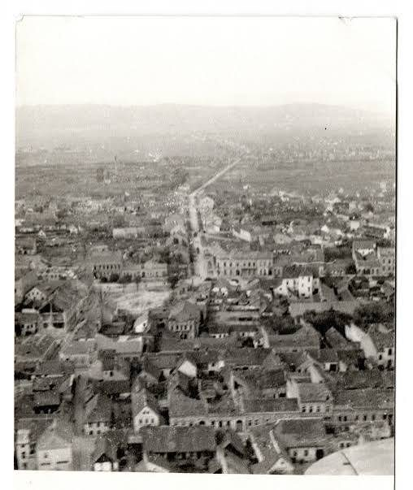

Strateški položaj i početak napada
Tijekom Domovinskog rata, Slavonski Brod bio je jedan od najteže stradalih gradova u Republici Hrvatskoj. Zbog svog iznimno važnog prometnog i strateškog položaja na rijeci Savi te neposredne blizine bosanske Posavine, grad se našao na izravnom udaru srpskih snaga. Osim što je bio ključna poveznica između zapadne i istočne Hrvatske, grad je bio izložen stalnim topničkim napadima s druge obale rijeke Save te učestalim naletima neprijateljskog ratnog zrakoplovstva.
„Pakleni svibanj” i razaranja 1992. godine
Najteže razdoblje za grad i njegove stanovnike bila je 1992. godina, kada je svakodnevni život preseljen u podrume i skloništa. Na grad je tijekom rata ispaljeno na tisuće topničkih i minobacačkih projektila. Posebno tragičan bio je početak svibnja 1992. godine, razdoblje poznato kao „Pakleni svibanj”.
Od 2. do 8. svibnja 1992. neprijateljsko zrakoplovstvo izvelo je 65 napada s čak 200 naleta na grad. Korištena su najrazornija streljiva, uključujući teške aviobombe od 250 kilograma, kasetne bombe i navođene rakete. U nedjelju, 3. svibnja 1992., Slavonski Brod doživio je jedan od najtežih dana u svojoj povijesti. U silovitim bombardiranjima toga dana poginulo je 16 civila, među kojima i šestero djece, dok je 60 osoba ranjeno.
Ciljevi napada nisu bili samo vojni položaji, već i stambena naselja, škole, dječji vrtići, bolnica te veliki industrijski pogoni poput tvornice „Đuro Đaković”. Uništeno je ili teško oštećeno više tisuća obiteljskih kuća i gospodarskih objekata.
Najveća tragedija – stradanje najmlađih
Najdublju ranu u povijesti Slavonskog Broda ostavilo je stradanje civila, a osobito djece. Tijekom Domovinskog rata u cijeloj je Hrvatskoj poginulo 402 djece, a upravo je na području Slavonskog Broda i brodske Posavine stradalo najviše mališana u jednom gradu – ukupno 28 djece, dok ih je 65 ranjeno.
Dana 3. svibnja 1992. zrakoplovna bomba izravno je pogodila obiteljsku kuću u gradskom naselju Jelas, pored Osnovne škole Huga Badalića. U podrumu u kojem su potražili zaklon smrtno je stradalo sedam civila, od čega petero djece, a najmlađa žrtva imala je tek godinu i pol dana. Samo nekoliko tjedana kasnije, 27. svibnja 1992., granata je pala na dječje igralište u naselju Plavo polje u trenutku kratkog zatišja, usmrtivši još troje djece.
Spomenici i čuvanje sjećanja
Unatoč stalnim opasnostima, stotinama dana provedenih pod uzbunama i prihvatu desetaka tisuća izbjeglica iz Bosanske Posavine, Slavonski Brod nikada nije pao. Danas u gradu postoji nekoliko trajnih spomen-obilježja koja čuvaju sjećanje na žrtvu branitelja i civila.
Na Šetalištu braće Radić uz rijeku Savu podignut je spomenik „Prekinuto djetinjstvo” u trajni spomen na 28 poginule brodske djece i svu djecu stradalu u Domovinskom ratu. Ispred Osnovne škole Huga Badalića, koju je pohađalo čak 16 od ukupno 28 poginulih učenika, postavljena je skulptura „Djevojčica”. Uz njih, u gradu stoji i spomenik poginulim hrvatskim braniteljima, mjesto na kojem se svake godine odaje počast svima koji su položili živote u obrani grada i domovine.
Uz ogromnu štetu na civilnim objektima i industriji, grad je platio najtežu
moguću cijenu u ljudskim životima – u ratnim djelovanjima poginulo je 28-ero djece,
što ostaje jedna od najtužnijih istina obrambenog rata.
Obrana grada i 108. brigada Hrvatske vojske
Slavonski Brod nije bio samo meta razaranja, već i snažno uporište obrane cijele Slavonije i hrvatskog istoka. Ključnu ulogu u obrani grada i okolnih mjesta imala je legendarna 108. brigada Zbora narodne garde (kasnije Hrvatske vojske), osnovana 28. lipnja 1991. godine. Kroz ovu je brigadu prošlo više od pet tisuća branitelja koji su držali crtu bojišnice uz rijeku Savu te sudjelovali u obrani zapadne Slavonije i bosanske Posavine.
Osim vojne obrane na bojišnici, presudna je bila i protuzračna obrana grada. Brođani i branitelji u sastavu protuzračne obrane uspjeli su oboriti nekoliko neprijateljskih zrakoplova koji su svakodnevno nadlijetali grad, čime su spriječili još veće civilne žrtve i razaranja.
Humanitarna kriza i prihvat prognanika
Tijekom 1992. godine, kada su započeli žestoki sukobi u susjednoj Bosanskoj Posavini, preko savskog mosta u Slavonski Brod slile su se rijeke prognanika i izbjeglica. U grad koji je tada imao oko 55 tisuća stanovnika pristiglo je više od 60 tisuća prognanika iz Bosne i Hercegovine, ali i iz drugih okupiranih dijelova Hrvatske poput Vukovara i okolnih sela.
Unatoč tome što je i sam bio pod neprekidnim granatiranjem, Slavonski Brod otvorio je vrata svima. Građani su u svoje domove, podrume, škole i sportske dvorane primili tisuće ljudi kojima je bio potreban krov nad glavom, hrana i liječnička pomoć.
Život pod uzbunama i ratna bolnica
Svakodnevica u Slavonskom Brodu tijekom 1991. i 1992. godine bila je obilježena zvukom sirena za opću i zračnu opasnost. Mnoge su obitelji mjesecima živjele, spavale i kuhale u podrumima, a školska se nastava odvijala u improviziranim skloništima ili na daljinu kako bi se zaštitila djeca.
Poseban teret podnijela je Opća bolnica „Dr. Josip Benčević”. Iako je i sama bolnica više puta bila izravna meta granatiranja, liječnici, medicinske sestre i ostalo osoblje radili su bez prestanka u podrumskim prostorijama. Kroz brodsku je bolnicu tijekom rata prošlo više od sedam tisuća ranjenika – kako hrvatskih branitelja i civila iz grada, tako i ranjenika s ratišta u Bosanskoj Posavini.
Osim goleme materijalne štete na stambenim objektima, kulturnim spomenicima i industriji (poput tvornice Đuro Đaković),
najveća tragedija Domovinskog rata u Slavonskom Brodu bila su stradanja civilnog stanovništva. U ratnim djelovanjima
poginulo je 28-ero djece, što Slavonski Brod svrstava među gradove s najvećim i najtužnijim gubitkom najmlađih života.

Slavonski Brod tijekom ratnih razaranja 1992. godine